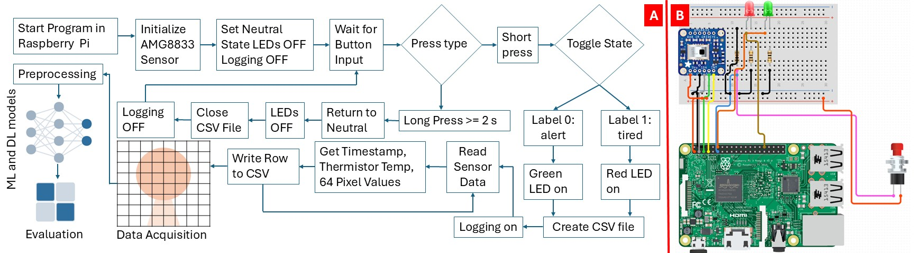
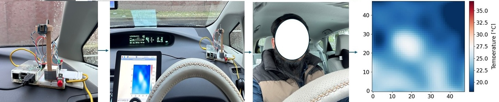
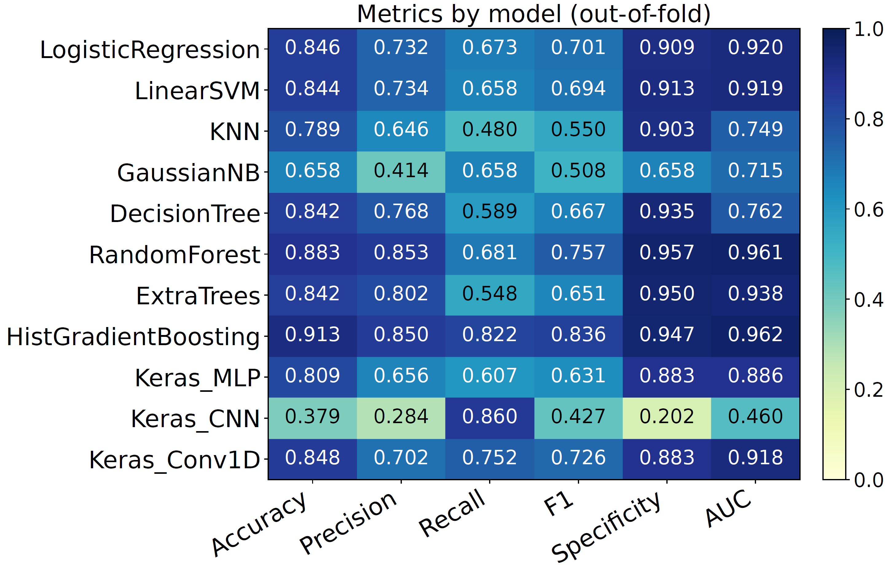
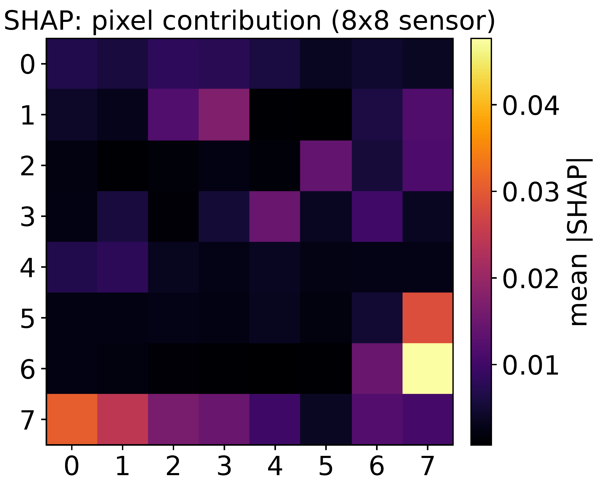
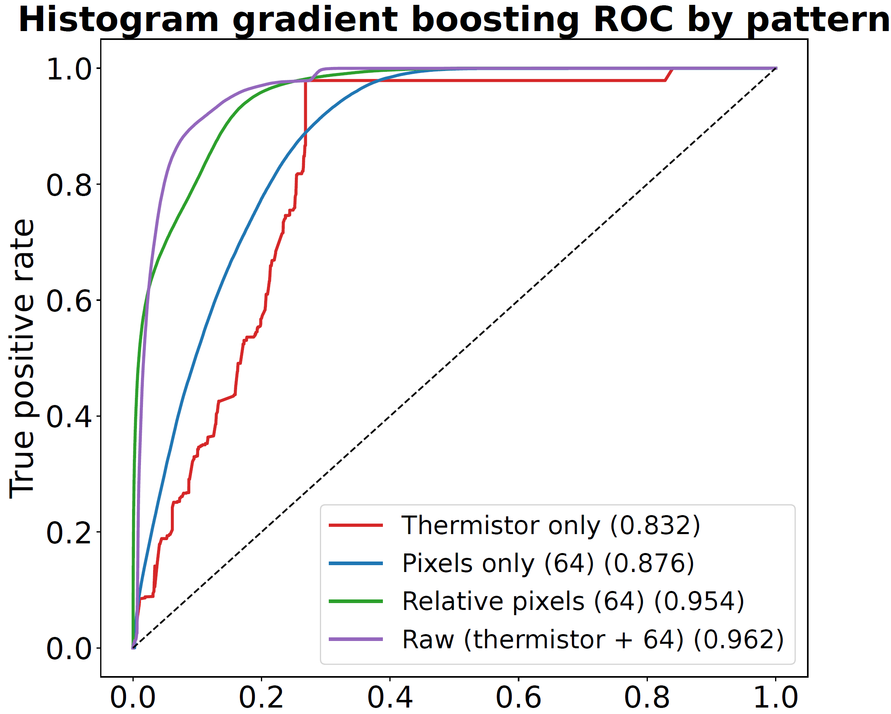
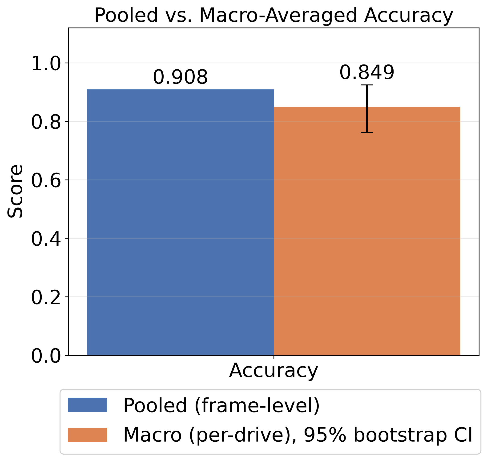
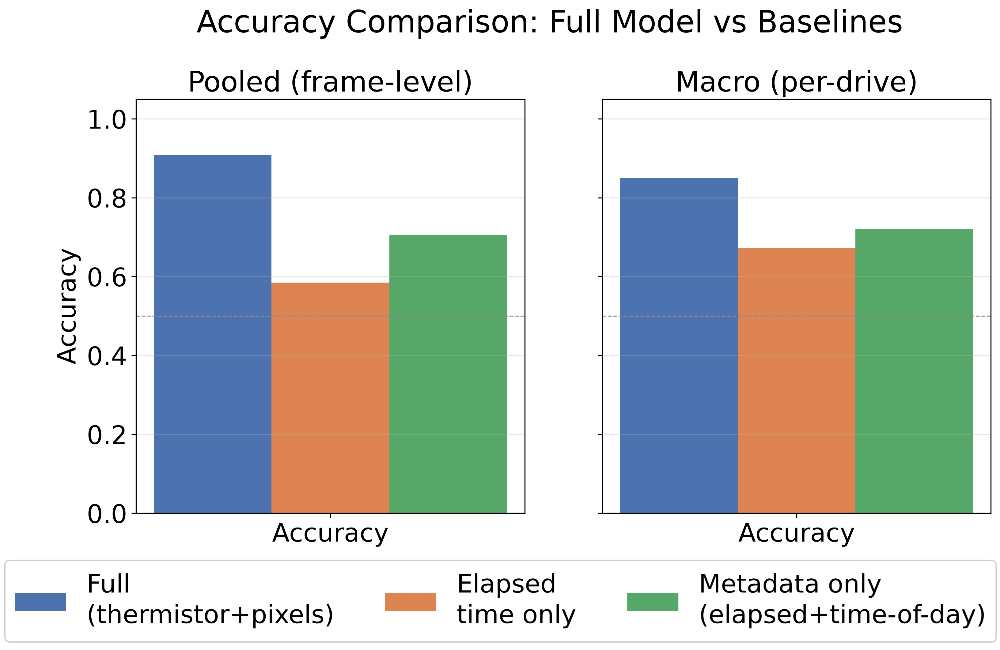

Privacy-Preserving Driver-State Sensing Using a Low-Resolution Infrared Array
A 64-pixel thermal sensor can tell alert from fatigued — without ever recording a recognisable image.
Why not just use a camera?
A camera
This sensor — 64 pixels
- A camera records a face that can identify a person.
- A sensor with no clear face still tells alert from fatigued — ~2,000 km of real driving shows it.
1How it works

- 64 pixels, ~14 cm each: too coarse for a face. A thermistor adds a reference temperature.
- One button sets the label (green LED 0 alert, red LED 1 fatigued); a Raspberry Pi logs to CSV at 8 Hz.
2Real-world data, not a simulator

From raw CSV to watchable footage
- Longest alert and tired periods of the 40 drives look alike to the eye; the model finds the small patterns.
3Eleven models, one clear winner

0.913accuracy
0.836F1
0.962AUC
- Five-fold CV by whole drive: frames 0.125 s apart are near-identical.
- HGB leads on every metric and beats the majority-class baseline.
4Is it really physiological?


- SHAP: the reference temperature dominates — is it just cabin temperature?
- Relative pixels alone still reach 0.954 AUC (full set 0.962): no.
5Validated beyond a single number


- Per drive: accuracy 0.849 (95% CI 0.762–0.925).
- Time-only models (no thermal input) score far lower.
6Seeing the trade-off, not just the numbers
Replay clip · 3× speed- Trained on 39 of the 40 drives; the replayed drive was held out.
- Relative pixels get close to the full set — reference temperature does not explain the result.
At the demo table
Live sensing
- Your own 8×8 thermal pattern, in real time — no photograph, no face.
Replay classification
- A real drive through the trained models: self-report vs prediction.
Takeaway
- Low-resolution thermal sensing gives driver-state information without a clear image of the driver.
- Single-driver study; next: more drivers and vehicles.
Resources
- Dataset · IEEE Dataport 10.21227/pqh7-aj41
- Live demo paper · IEEE SENSORS 2026, Paper ID 8824
- Demo Presentation Video Link
- Poster Link